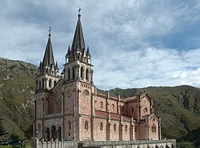

Covadonga (cooficialmente, en asturiano, Cuadonga) es una parroquia del concejo de Cangas de Onís en el Principado de Asturias, España, así como la única población, con la categoría de lugar, de dicha parroquia.
La parroquia incluye el Real Sitio de Covadonga, con su Santuario, y forma parte del Parque Nacional de los Picos de Europa, y en sus 2,54 km² habitan un total de 58 personas.
El lugar de Covadonga está a una altitud media de 257 metros sobre el nivel del mar, en la falda del monte Auseva, y dista unos 11 kilómetros de Cangas de Onís.
Etimología
Existen dos etimologías propuestas, para el topónimo Covadonga, una que le hace derivar del céltico y otra del latín. De acuerdo al origen celta, Covadonga viene de Cova d'onnica, con el significado de "la fuente de la cueva"; con el derivado *onnika "fuente", del céltico *onna "río", que se puede encontrar en hidrónimos como Güeña y Oña (<*onna), Isongu (< *Isonniko) "fuente del río Is", Trioungu (< *Trionniko) "tres fuentes", Candongu (< *Kandonniko) "fuente clara", etc. En cuanto a la segunda propuesta, la de su origen en la lengua latina, significaría "Cueva de la Señora" (< Cova Dominica), haciendo alusión al lugar consagrado a la Virgen de Covadonga; sin embargo, de acuerdo a la evolución de la lengua asturiana, la evolución de Cova Dominica, habría dado el resultado de *Covadominga.
Volver al inicioConjunto monumental del santuario
El Real Sitio de Covadonga posee el conjunto monumental más visitado de Asturias. Es un santuario dedicado a la Virgen de Covadonga (La Santina), conmemorativo de la Batalla de Covadonga.
| Santa Cueva de Covadonga |
El elemento central del Santuario es la Santa Cueva, donde se encuentra la Capilla-Sagrario con la imagen de la Virgen de Covadonga y la tumba de Don Pelayo. Según la tradición, en este lugar se habrían refugiado don Pelayo y sus hombres durante la Batalla de Covadonga. |
 |
| Monasterio de San Pedro |
Junto a la Santa Cueva se erige el Monasterio de San Pedro, habitado por una comunidad de canónigos. El edificio incluye una casa de ejercicios espirituales. |
 |
| Basílica de Santa María la Real de Covadonga |
Cerca de la Santa Cueva y el conjunto monacal se alza la Basílica de Santa María la Real de Covadonga. Ideada por Roberto Frassinelli y levantada entre 1877 y 1901 por el arquitecto Federico Aparici y Soriano, de estilo neorrománico construida íntegramente en piedra caliza rosa. |
 |
| Explanada |
Además, en la explanada de la Basílica se encuentran:
|
.jpg) |
Volver al inicio
Reyes enterrados en Covadonga
En la Santa Cueva se hallan los sepulcros de los reyes de Asturias:
- Don Pelayo
- Alfonso I, el Católico.
Entorno natural
El 22 de julio de 1918, con motivo del 12º centenario de la batalla de Covadonga, se crea el Parque nacional de la Montaña de Covadonga, primer Parque nacional de España, que con su ampliación al resto de los Picos de Europa en 1995 pasaría a llamarse Parque nacional de los Picos de Europa.
En esta área se encuentra el Macizo Occidental de los Picos de Europa, el macizo más extenso, siendo Peña Santa con 2.596 metros la mayor altitud. En este macizo se sitúan los lagos de Covadonga, nombre que se le da al conjunto del lago Enol y el lago Ercina.
Volver al inicio